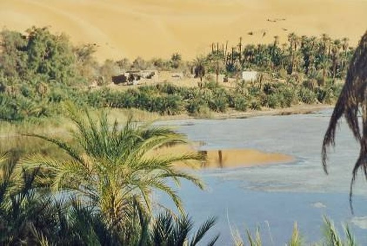
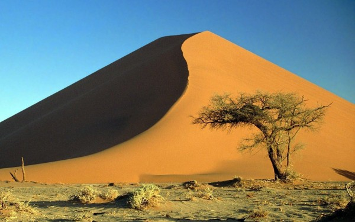

Unde este singurul deşert din Romania? - Descopera.ro
 D:News Stiinta Cultura Natura Lumea digitala Istorie Video Home » Maratoanele Descopera » Mari întrebări » Unde este singurul deşert din Romania?
Unde este singurul deşert din Romania?
Autor: Nicu Parlog 11.20.2014